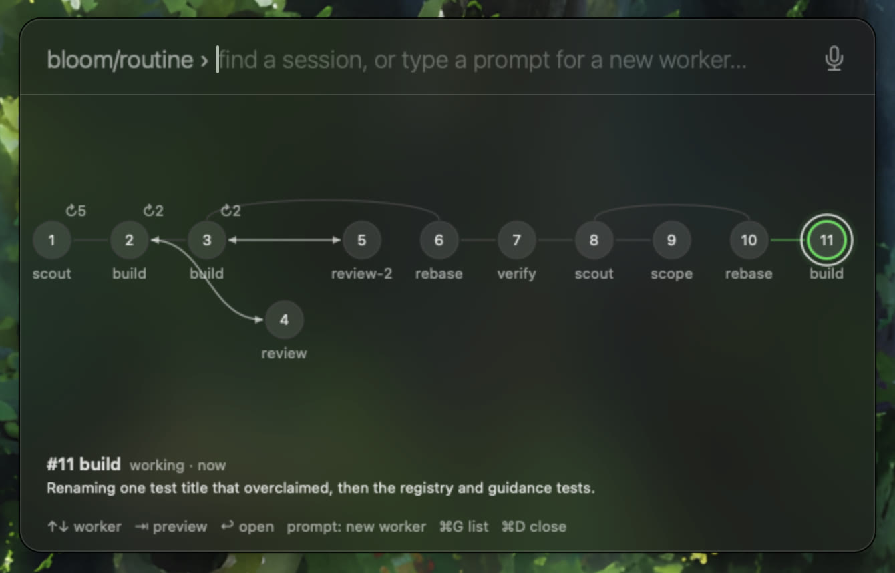

how it works
one box. every session.
Samara reads Claude Code's own files, so there is nothing to set up per repo.
01
see all your work at a glance
Every repo and feature as a dot. Click one to drop into its sessions.
- Grouped by repo from Claude Code's own session files
- Type to filter features, repos and sessions
- Type
<repo> <prompt>to start a worker there

02
watch a feature's workers
Each feature has an orchestrator and numbered workers: scout, scope, build, verify, review, ship.
- Who handed work to whom, drawn as a graph
- Live status and the last message of the selected worker
- Workers run as
claude --bg, watched in tmux

03
talk to any worker
Type and press return. Your text is sent to the worker, and queues while it is busy.
- Resume a session that has exited
- Open its terminal with return on an empty field
- Dictate with ⌘M
